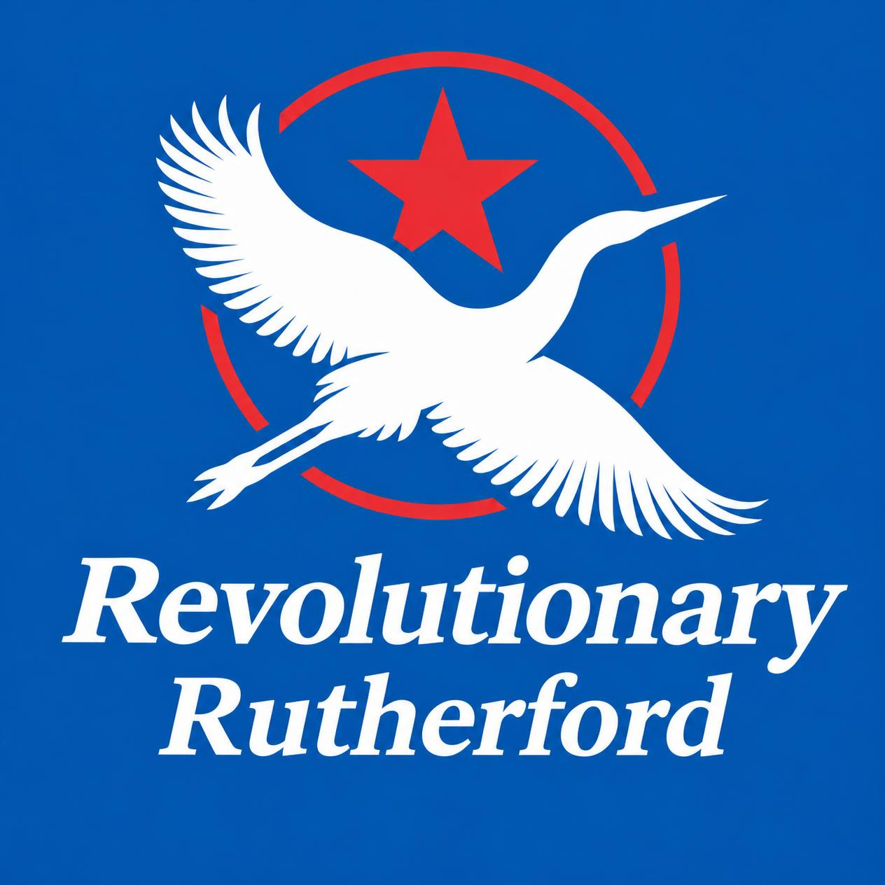

A school built for bold thinking
Learning with courage, pride, and purpose.
Rutherford High School is a place where students are encouraged to lead, create, and innovate. We celebrate strong character, academic success, and the determination to make meaningful change in our community.

Academic Excellence
Challenging coursework and supportive teachers empower students to pursue excellence in every subject and skill.
Student Leadership
We grow confident, compassionate leaders through service, teamwork, and opportunity to make a real difference.
Creative Futures
From the arts to technology, students are encouraged to explore their passions and build a path toward innovation.
Why Rutherford?
Where achievement meets ambition.
At Rutherford High School, students are challenged to think critically, act with integrity, and embrace the kind of determination that changes communities for the better.
- Inclusive, welcoming campus culture
- Passionate teachers and mentors
- Well-rounded opportunities in sports, arts, and STEM
- Strong community spirit and school pride
Leadership
Innovation
Community
A community on the move